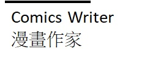
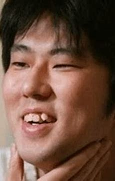
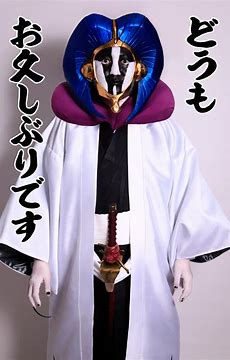
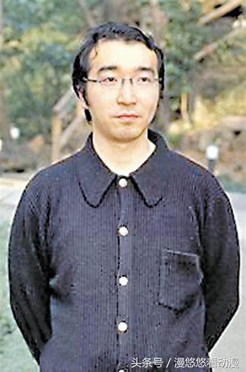
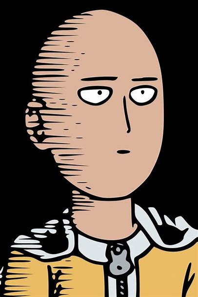
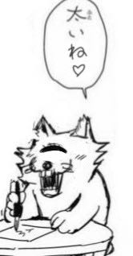
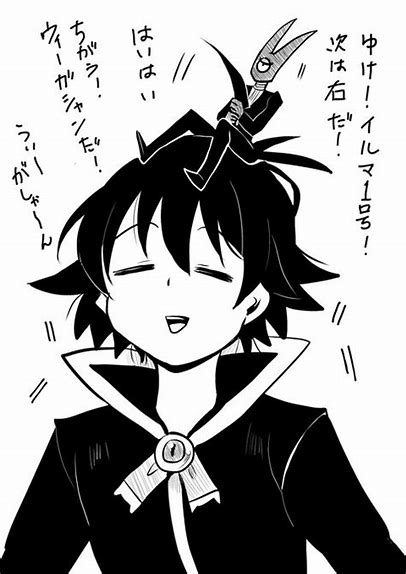
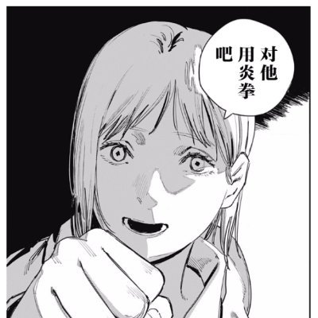

知名主流漫畫作家

尾田榮一郎
超人氣漫畫「海賊王」的作者，從出道至今只有一部作品，但卻蟬聯16年日本漫畫總銷量冠軍，其作品家喻戶曉，是當代最有名的漫畫家。

久保帶人
漫畫家中的詩人，「死神」為其最具代表性的作品，作品中的台詞時常帶有深意，再加上那十分帥氣(中二)的招式名稱，廣受青少年喜愛。
岸本齊史
最燃漫畫「火影忍者」的作者，擁有許多天賦異稟般的奇思妙想，將火影忍者這部動漫推向高峰，在此一作品完結後也仍在持續創作。

冨樫義博
漫畫界的摸魚大師，著有「幽遊白書」、「獵人」，雖然是位優秀的漫畫家，但卻時常無故休刊，也因此被他的粉絲們稱為「富奸老賊」。
非主流漫畫作家

ONE
興趣使然的漫畫家，知名作品為「一拳超人原作版］，原本是一名上班族，畫風潦草但分鏡與對話張力十足，受漫畫家村田雄介邀請一同參與製作「一拳超人重製版」，因大受歡迎而辭掉工作專攻漫畫。

芥見下
「咒術回戰」作者，作品兼具冨樫義博的設定與久保帶人的詩意，其作品雖為少年漫畫，但主要角色不吝犧牲，設定繁雜豐富，且畫風成熟寫實，是新生代漫畫家之一。

西修
「入間同學入魔了」的作者，作品集搞笑、奇幻、發人省思等多種要素於一體，腦洞清奇，令人難以預測接下來的發展，獨特的畫風也為其作品增添了不少色彩。

藤本樹
漫畫界的精神病患者，著有「電鋸人」、「炎拳」，其作品詭異而血腥，殘酷且唯美，在平淡的畫風中展露瘋狂的自我，卻又顯得異樣的和諧，是漫畫界公認的瘋子。